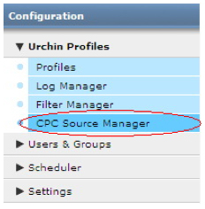
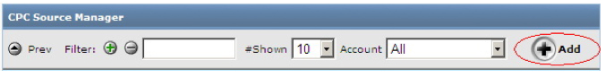
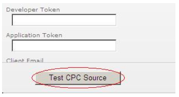
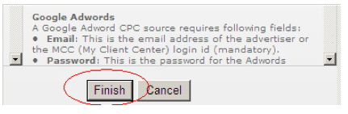
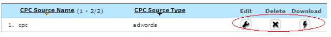
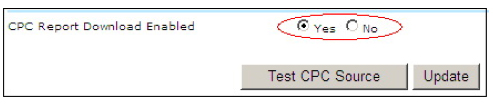
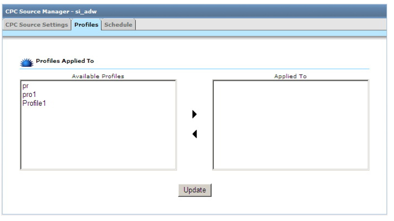
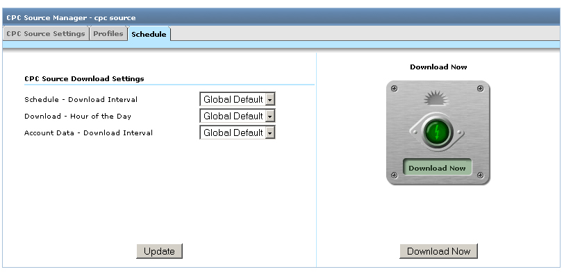
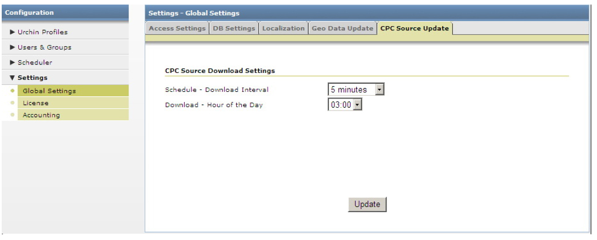

單次點擊出價來源 (Urchin 6.5+)
Urchin 6.5 中新增了一種資料來源： 單次點擊出價來源。 單次點擊出價來源可以自動從外部來源擷取單次點擊出價廣告活動資料，這一點與記錄來源頗為相似。 與記錄檔來源和篩選器等現有設定檔進行連結後，單次點擊出價來源即可自動將單次點擊出價資料納入 Urchin 報表。 您可以為 Google AdWords (Urchin 6.5+) 和 Yahoo! 奇摩搜尋行銷 (Urchin 6.6+) 建立單次點擊出價來源。
請注意： 由於版本的功能限制，AdWords 精簡版帳戶無法使用單次點擊出價來源。 若要使用單次點擊出價來源，您必須將 AdWords 帳戶升級為標準版。
6.500 至 6.501 版本升級的重要注意事項： 從 6.500 版升級至 6.501 版時，您必須手動刪除舊的單次點擊出價資料。 若要進行這個步驟，請刪除下列目錄中的全部內容：
<path_to_urchin_6500_installation>/data/cpc/... <path_to_urchin_6500_installation>/data/history/cpc/...
單次點擊出價來源管理工具
您可以在 [組態] > [Urchin 設定檔] 區段下找到「單次點擊出價來源管理工具」(僅適用於 Urchin 6.5 +)。

「單次點擊出價來源管理工具」會列出目前 Urchin 程式中設定的所有單次點擊出價來源，並提供使用者介面控制項，讓管理員建立並修改單次點擊出價來源。
建立新的單次點擊出價來源
若要新增並設定新的單次點擊出價來源，請按一下「單次點擊出價來源管理工具」右上角的 [新增] 按鈕。

這麼做會啟動"「新增單次點擊出價來源精靈」"，引導您完成新增/設定單次點擊出價來源的所有步驟。
在精靈的第一個步驟中，請填寫下列資料：
- 選擇性帳戶 - 指定要與新增的單次點擊出價來源相連結的帳戶 (僅適用於資料中心模式)。
- 單次點擊出價來源名稱 – 輸入單次點擊出價來源的名稱。
- 單次點擊出價來源類型：
Google AdWords
電子郵件* - 目前使用的 AdWords 帳戶登入電子郵件地址，或是「我的客戶中心」帳戶登入資訊。
- 密碼* – 登入帳戶的密碼。
開發人員權杖 – 用來識別 AdWords API 授權開發人員的獨特字串 (選擇性欄位)。Urchin 已內建預設開發人員權杖，除非您想要使用自己的開發人員權杖，否則不用填寫這個欄位。
應用程式權杖 – 存取 AdWords API 時使用的應用程式權杖。 與開發人員權杖的情況相同，您不一定要填寫這個欄位。
- 客戶電子郵件 – 若要使用「我的客戶中心」登入資訊 (電子郵件是「我的客戶中心」帳戶登入資訊的一種)，請填寫您的客戶帳戶登入電子郵件地址。
客戶編號 – 若要使用「我的客戶中心」登入資訊，請填寫要使用的 AdWords 帳戶的客戶編號 (格式為 123-456-7890，您可以在 Google AdWords 帳戶網頁右上角找到此編號)。 若填寫這項資訊，就不必提供客戶電子郵件。
若要驗證您的單次點擊出價來源設定，請按一下 "[測試單次點擊出價來源]" 按鈕。

Yahoo！ 奇摩搜尋行銷
- 使用者名稱* - 您的 YSM 帳戶使用者名稱， 可以是廣告客戶的電子郵件地址，或是替廣告客戶管理報表之代理商的電子郵件地址。
- 密碼* - 您的 YSM 帳戶密碼。
- 主要帳戶編號* - 廣告客戶的主要帳戶編號。
- 帳戶編號* - 廣告客戶的帳戶編號。
- 授權金鑰 - 登入使用者 (廣告客戶或代理商) 的授權金鑰。
- 所代理人的使用者名稱 - 廣告客戶所代理人的使用者名稱， 只有當登入名稱是代理商而非廣告客戶時才需要提供 (選擇性)。
- 所代理人的密碼 - 廣告客戶所代理人的密碼 (選擇性)。
按一下 '[完成]' 按鈕，即可完成此程序。

編輯單次點擊出價來源
新增單次點擊出價來源之後，您就可以編輯其設定、進行刪除或是安排下載時間。

若要編輯現有的單次點擊出價來源設定，請按一下想要編輯之項目旁的 [編輯] 按鈕。

您可以修改 AdWords 或 YSM 帳戶的登入設定，也可以啟用或停用單次點擊出價來源未來的下載工作。 請注意： 即使您選擇停止日後下載報表的工作，與此單次點擊出價來源相連結的設定檔還是會繼續使用已經下載的報表。
在 '[設定檔]' 分頁中，您可以將單次點擊出價來源連結至一個或多個現有的設定檔， 但只能連結至目前 Urchin 帳戶中的設定檔。 連結後，單次點擊出價來源中的單次點擊出價資料會顯示在相關設定檔的報表中。

安排單次點擊出價來源的下載時間
在「編輯單次點擊出價來源」畫面的 [時間安排] 分頁上，您可以定義單次點擊出價來源的下載設定：
- 時間表 – 下載時間間隔 – 單次點擊出價下載工作可分為兩個階段。 在第一個階段中，系統會驗證單次點擊出價認證，並向單次點擊出價伺服器發出報表下載要求。 在第二個階段中，系統會定期執行檢查，直到找到可供下載的報表為止。 下載報表後，第二階段即告結束。 根據帳戶中的廣告活動數量、取得的資料量、伺服器目前的負載量等因素而定，伺服器可能需要一些時間才能提供可下載的報表。此時間間隔將決定 Urchin 收到下載要求後，需要多久時間才會開始檢查是否有報表可供下載。 至於此時間間隔的具體長度，我們建議：如果帳戶規模龐大，而且點擊流量非常高，最好將此間隔設為較高的數值。
- 下載 - 時段 – 透過設定此功能，您可以在每天的指定時段下載單次點擊出價來源最新報表。 重要注意事項： 由於系統是以每天 (而不是每小時) 為單位擷取單次點擊出價資料，極力建議您在 AdWords 或 YSM 帳戶所屬時區的一整天結束後，等候至少兩小時再進行下載， 以確保能透過 AdWords 或 YSM 伺服器取得當天的所有單次點擊出價資料。 對於內含單次點擊出價來源的設定檔，最好排在單次點擊出價資料下載完畢後才進行處理， 這樣一來，您就可以在報表中看到最新的單次點擊出價資料。
- 帳戶資料 - 下載時間間隔 (僅適用於 Urchin 6.6+ 中的 AdWords 帳戶) - 使用此選項可設定 AdWords 帳戶結構的「下載時間間隔」。 您必須下載 AdWords 帳戶結構，才能查看「廣告活動」和「關鍵字」中繼資料或使用「關鍵字產生工具」、「複製廣告活動」和「AdWords 標記管理」等工具。

在「全域設定」畫面的 [單次點擊出價來源更新] 分頁上，您可以定義預設的全域單次點擊出價來源下載設定。
